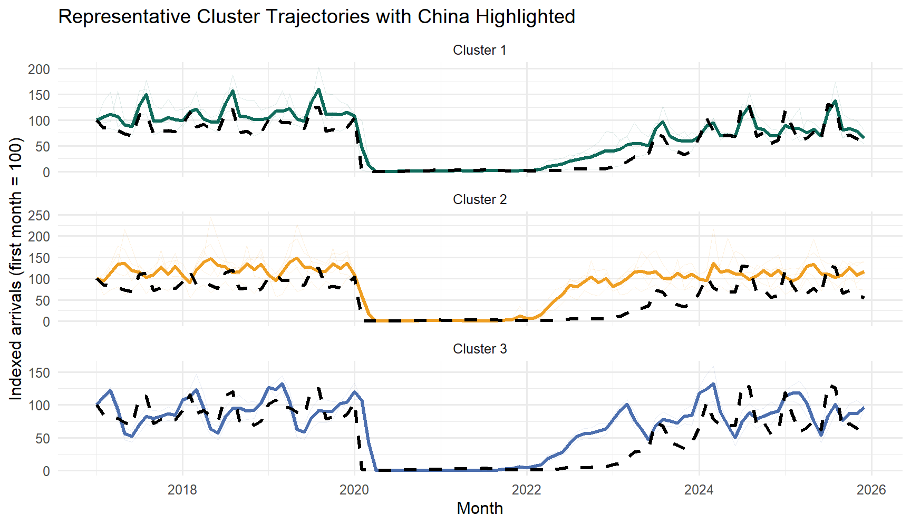
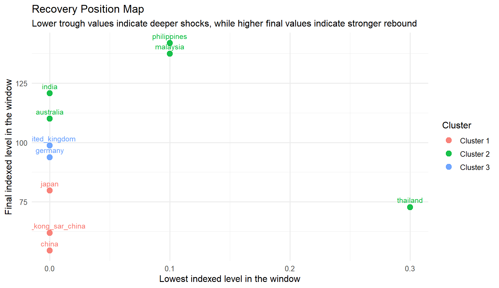

Country-level tourism recovery trajectories in Singapore
1. Introduction
This prototype follows a strict code -> result -> explanation rhythm. Each section shows one piece of code, one visible result, and one interpretation.
The clustering unit in this module is a country time series, not a month. In other words, each country is treated as one monthly arrival trajectory, and the goal is to identify which countries share similar recovery patterns in Singapore’s inbound tourism.
The page first looks for the processed files expected by the final project:
data/processed/clustering_country_wide.csv
data/processed/clustering_country_long.csv
If those files are not present during local rendering, the page falls back to the raw workbook so that the prototype remains executable while the project is being assembled.
The method used here is a practical hierarchical clustering workflow built on comparable monthly trajectories:
index each series to a common baseline;
z-score the indexed values across time for comparability;
cluster the country series with a distance matrix and Ward linkage;
use silhouette diagnostics to choose k;
interpret the final clusters with a membership table, representative profile plot, and a China placement check.
2. Load Packages
The first step is to load the packages used throughout the prototype.
The package table confirms that the prototype uses a small, base-project-friendly set of tools for reading data, shaping trajectories, clustering country series, and reporting results.
3. Import The Series Files
The next step is to import the processed clustering inputs if they already exist. If not, the page reconstructs a compact country-level series table from the raw workbook for local checks.
The import summary confirms that the prototype works on a clean monthly window and that the clustering input is a compact country-level table rather than a month-level feature matrix.
4. Confirm The Clustering Unit
Before clustering, it is useful to inspect the country series that will be included in the model.
This table shows that each row is a country series with a common monthly span. That is exactly the right unit for time series clustering because the model is now grouping recovery trajectories instead of individual months.
5. Build Comparable Trajectories
The next step is to put every country onto a common scale. Indexing starts each series at 100, and z-scoring then makes the trajectories comparable for distance-based clustering.
The trajectory summary shows why normalization is necessary. The countries are measured on the same scale, but their growth paths differ enough that raw values alone would overstate the largest markets.
The diagnostics already point to a compact solution with a small number of clusters. In this dataset, k = 3 gives the best balance between separation and interpretability.
6.1 Diagnostic Plot
The second diagnostic is the silhouette trend across candidate k values.
The plot confirms that k = 3 is the strongest practical choice. It separates the countries cleanly enough to be useful while still leaving room for a meaningful market-state interpretation.
7. Fit The Final Hierarchical Model
With the diagnostics in hand, the final clustering model can be fitted using three clusters.
The final solution produces three interpretable blocks, but the richer point is that they are not just different groups of countries. They also reflect different recovery strengths. The summary table now shows which cluster rebounds furthest, which one experienced the deepest trough, and which country acts as the representative pattern for each group.
8. Show Cluster Membership
The next table lists every country and its final cluster assignment.
This membership view is the direct model output that the Shiny app should expose. It now does more than list cluster IDs: it also shows whether each country finishes the window strongly, how deep its trough becomes, and how much it rebounds from that trough.
9. Show Representative Cluster Profiles
To make the clusters easier to interpret, the next plot shows the average indexed trajectory of each cluster over time, with China highlighted on top of its cluster profile.
china_line <-data.frame(date = country_indexed$date,indexed_value = country_indexed[[china_series]],series = china_series)ggplot(cluster_solution$plot_data, aes(x = date, y = value, color = cluster, group =interaction(series, type))) +geom_line(data =subset(cluster_solution$plot_data, type =="Series"),alpha =0.14,linewidth =0.35 ) +geom_line(data =subset(cluster_solution$plot_data, type =="Cluster mean"),linewidth =1.15 ) +geom_line(data = china_line,aes(x = date, y = indexed_value),inherit.aes =FALSE,color ="black",linewidth =1.2,linetype ="dashed" ) +scale_color_manual(values =c("Cluster 1"="#0f6b5b", "Cluster 2"="#ef9f23", "Cluster 3"="#4c6faf")) +labs(title ="Representative Cluster Trajectories with China Highlighted",x ="Month",y ="Indexed arrivals (first month = 100)",color ="Cluster" ) +facet_wrap(~cluster, ncol =1, scales ="free_y") +theme_minimal(base_size =12) +theme(legend.position ="none")

This plot is now closer to what the final app should show: all member trajectories sit faintly in the background, the cluster mean gives the dominant pattern, and China is highlighted as a dashed reference line. That makes it much easier to tell whether China is representative of its group or slightly offset from it.
10. Compare Recovery Strength Across Countries
The next chart turns the clustering result into a recovery comparison. Countries that fell lower on the x-axis experienced a deeper trough, while countries that sit higher on the y-axis end the window from a stronger position.
ggplot( cluster_solution$series_features,aes(x = trough_index, y = end_index, color = cluster, label = series)) +geom_point(size =3.2, alpha =0.9) +geom_text(vjust =-0.8, size =3.3, show.legend =FALSE) +labs(title ="Recovery Position Map",subtitle ="Lower trough values indicate deeper shocks, while higher final values indicate stronger rebound",x ="Lowest indexed level in the window",y ="Final indexed level in the window",color ="Cluster" ) +theme_minimal(base_size =12)

This view adds analytical depth because it separates two ideas that line charts often blur together: how hard each market was hit, and how strongly it recovered by the end of the selected window. The clusters are not just visually different; they also occupy different recovery positions.
11. Interpret China’s Placement
China belongs to the North Asia cluster, together with Japan and Hong Kong SAR (China). The next table shows that cluster and orders the members by their distance to China in the standardized trajectory space.
China falls in Cluster 1 (Delayed recovery). Its closest peers in the selected set are japan, hong_kong_sar_china, and the representative series for this cluster is japan.
This is the most important interpretive message in the clustering module. China remains central to the story, but the model does not treat it as a standalone exception. Instead, it places China inside a specific recovery family, which helps the final application compare it to the right peers rather than to every market at once.
12. UI Design Implications
The clustering prototype should expose controls that let the user change the country set, the normalization choice, and the number of clusters without breaking the workflow.
ui_map <-data.frame(Control =c("Country series selector","Year window","Normalization mode","Cluster count k","Run button","Insight cards","Recovery position map" ),Purpose =c("Choose the series that will be treated as trajectories","Keep the analysis window aligned with the monthly data","Switch between raw, indexed, and z-scored trajectories","Test whether the grouping should be more or less granular","Trigger clustering only when the user is ready","Explain cluster quality and China's placement in plain language","Compare shock depth and end-of-window recovery strength" ),Output =c("Membership table","Comparable time-series matrix","Diagnostic table and profile plot","Cluster summary and China placement","Updated cluster assignments and representative profiles","Cluster narrative and China narrative","Recovery metrics table and position plot" ))knitr::kable(ui_map, align =c("l", "l", "l"))
Control
Purpose
Output
Country series selector
Choose the series that will be treated as trajectories
Membership table
Year window
Keep the analysis window aligned with the monthly data
Comparable time-series matrix
Normalization mode
Switch between raw, indexed, and z-scored trajectories
Diagnostic table and profile plot
Cluster count k
Test whether the grouping should be more or less granular
Cluster summary and China placement
Run button
Trigger clustering only when the user is ready
Updated cluster assignments and representative profiles
Insight cards
Explain cluster quality and China’s placement in plain language
Cluster narrative and China narrative
Recovery position map
Compare shock depth and end-of-window recovery strength
Recovery metrics table and position plot
This UI mapping is the bridge from the prototype page to the final Shiny module. The refinement here is that the app should not stop at showing a cluster ID. It should also explain what the cluster means, how China fits into it, and how recovery strength differs across the grouped markets.